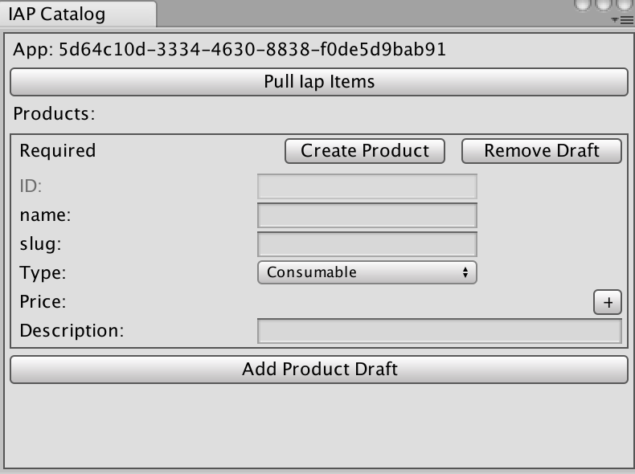
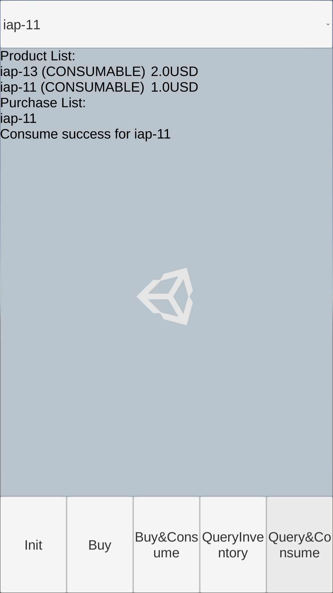
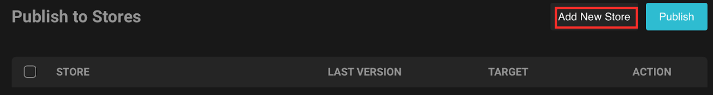
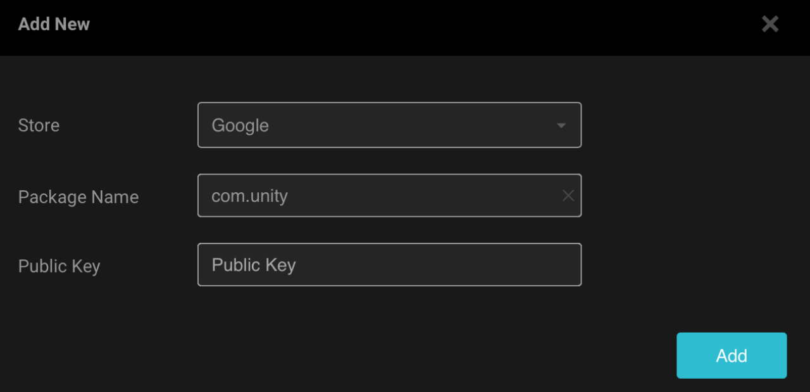

The SDK for UDP is an easy way to integrate your game with UDP. Before publishing your game via unity distribution platform (UDP), configure the SDK and test your configuration. Here are the things that you need to do:
- Generating a Unity client and test accounts
- Configuring the in-app purchase (IAP) for UDP
- Testing your configuration
Generating a Unity client and test accounts#
You can manage your game in UDP via a Unity client and test your game with test accounts. Take the following steps to generate a Unity client and test accounts:
Open Unity and log in with a Unity account. If you don’t have a Unity account yet, register one in https://id.unity.com.
Create or open a project and import the SDK. The SDK can be downloaded from https://unitytech.github.io/udp/.
- Stand-Alone UDP SDK
If you use Unity IAP, download and import this SDK. You also need to complete the technical integration according to Technical integration (without Unity IAP). - Unity IAP Pagckage
If you don’t use Unity IAP, download and import this SDK. You also need to complete the technical integration according to Technical integration (with Unity IAP)..Note: Make sure the project ID is consistent with the current environment. If not, clickUnlink projectand create a new Unity project ID.
Create a
Game Settings.assetfile.
Click the
Game Settings.assetfile underAssets > Plugins > UnityChannel > UdpSupport > Resourcesand generate a Unity client and test accounts.
In the above screenshot, you may need to use the following fields in
UDP Client Settings:
Client IDis the issued client identifier.Client RSA Public Keyis used to validate the purchase signature for UDP.Client Secretis the key to encrypting the receipt sent to developers’ server (Callback URL).Callback URLprovides your own server to receive the stores’ callbacks.
Client Key is currently only used in initializing the SDK for UDP.Configuring the IAP for UDP#
Take the following steps to configure the IAP for UDP:
Choose
IAP Catalog(Window>Unity UDP>IAP Catalog).Input your product information and click
Create Productto sync with the server. To add more products, ClickAdd Product Draft.Note: Specify the product price, or players can’t purchase products in game stores.
Click the
GameManagerGameObject inHierarchyand enter the slugs of your products intoProduct_1andProduct_2. You can add more products using theGameManager.csfile.
Testing the SDK for UDP#
After you complete the configuration, test the SDK for UDP, as follows:
Open the
SampleScene.sceneasset to show the demo.Build and open the demo.
Click
Initand log in with a test account.
Click
BuyorBuy&Consumeto buy products. You can see the purchase information on the user interface.
If the purchased item hasn’t been consumed, you can’t purchase it again.

Click
QueryInventoryto see all the products and purchases and clickQuery&Consumeto consume the unconsumed purchases.
Publishing your game to a partner store with test accounts#
After you have generated a Unity client and test accounts, you can publish your game to a partner store with the test accounts. Currently the supported stores include Google, Amazon, Samsung, CloudMoolah, and Xiaomi.
- In the Inspector tab of the GameSetting.asset file, click See More in Browser.
- Log in and select your game in the Portal.
- In the DASHBOARD tab, you can see the overall situation of your game.
- In the GAME INFO tab, enter your game information.
- In the PUBLISH GAME tab, add the store you want to push to.

Specify the Store, Package Name, and Public key.
 - Publish your game to the specified store.